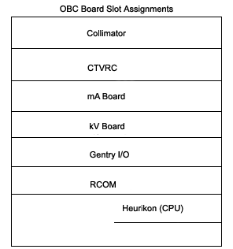
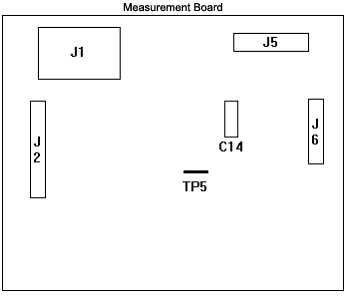

Operating Documentation
Direction 5112972-800, Rev# 2
CT Planned Maintenance Procedures
Operating Documentation |
| Required Persons | Preliminary Reqs | Procedure | Finalization |
|---|---|---|---|
| 1 | Timing Not Applicable | 15 mins | Timing Not Applicable |
Procedure Effectivity:
| Assembly: | HIGH VOLTAGE |
| Subassembly: | X-Ray Generation |
| Purpose: | mA Meter Verification (HHS) |
| Last Revised: | February 1998 |
| Item | Qty | Effectivity | Part# | Manufacturer | |
|---|---|---|---|---|---|
| 6-feet test lead | 1 | - | 46-297887P2 (red) | - | |
| - | - | - | 46-297887P1 (black) | - | |
| DVM | 1 | - | - | - | |
Inside the Gantry, do the following:
Switch off the 550v enable.
Switch off the Axial Drive.
Rotate the Anode Tank to the 2 o'clock position.
Pin the Gantry.
Remove the OBC cover (if not previously done).
Using a DVM as a DC mA meter, (Set meter range to one decimal place.)
Connect its black lead to TP8 (ACAL1) on the mA board.
Connect its red lead to TP11 (ACAL2) on the mA board.
See Illustration 1, for OBC Board Slot Assignments.
Illustration 1: OBC Board Slot Assignments

Locate the Anode HV Tank Measurement board. If a wire from the harness is present on TP5 (see Illustration 2) Measurement Board, the following test lead is not required. If no wire is present, install the test lead as follows:
Use a jumper with a 68 ohm 5 watt resistor in series.
Connect one end to TP11 (ACAL2) on the mA board.
Connect the other end to TP5 on the Anode Tank Measurement board.
Illustration 2: Measurement Board

Under Generator Characterization Menu, select [Read Metering] .
On the display, enter a time delay in seconds, this delay is the time required for you to walk from the console to the DVM and record the reading. The test will not begin until this time delay has expired. Once the test begins the meter circuit will be enabled for only four (4) seconds. For HSA, on the plasma, select [Run] .
Record the displayed and measured Anode mA values on FORM 4879 (Data Record) for "Circuit OFF" and "Circuit ON". A guideline for "Circuit ON" values is 140mA to 200mA.
| NOTE: | If your system has the test wire to TP5 included in the harness, the cathode side should read approximately 19mA during "Circuit ON"; anode should read 140mA to 200mA as stated above.) |
Disconnect the test lead from the anode tank (if used).
Repeat the test for the Cathode side as follows:
Using a DVM as a DC mA meter, (set meter range to one decimal place.)
Connect its red lead to TP9 (CCAL1) on the mA Board.
Connect its black lead to TP14 (CCAL2) on the mA Board.
(See Illustration 1, for OBC Board Slot Assignments).
Locate the Cathode HV Tank Measurement board. If a wire from the harness is present on TP5, the following test lead is not required. If no wire is present, install a test lead as follows:
Using a jumper with a 68 ohm 5 watt resistor in series.
Connect one end to TP14 (CCAL2) on the mA board.
Connect the other end to TP5 on the Cathode Tank measurement board.
For HSA, on the plasma , select [Run] .
Record the displayed Cathode mA values on FORM 4879 (Data Record) for "Circuit OFF" and "Circuit ON". A guideline for "Circuit ON" values is 140mA to 200mA.
| NOTE: | If your system has the test wire to TP5 included in the harness, the anode side should read approximately 20mA during "Circuit ON"; cathode should read 140mA to 200 mA as stated above.) |
Disconnect the test equipment.
Switch on the 550v enable.
No finalization required.